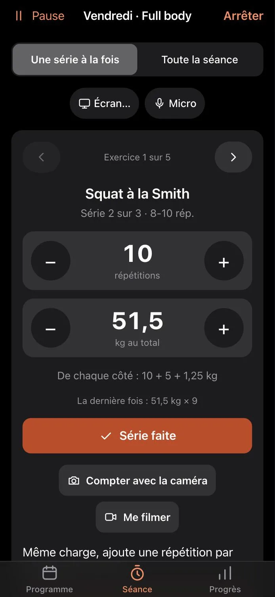
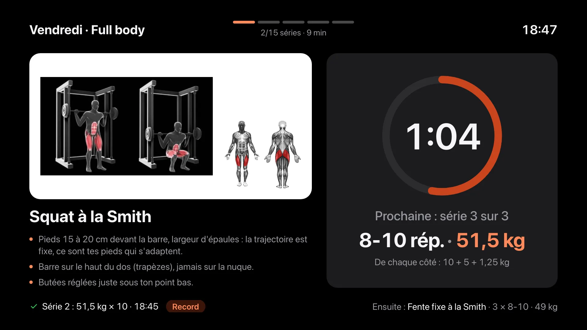
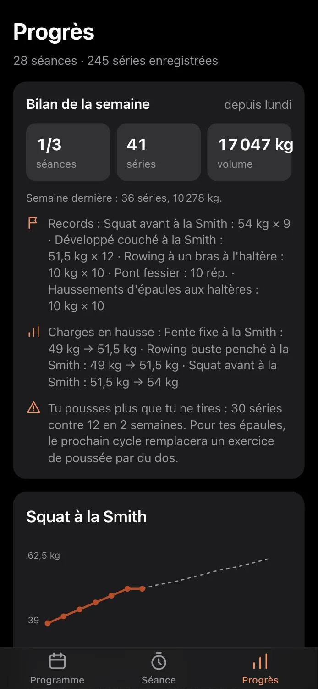
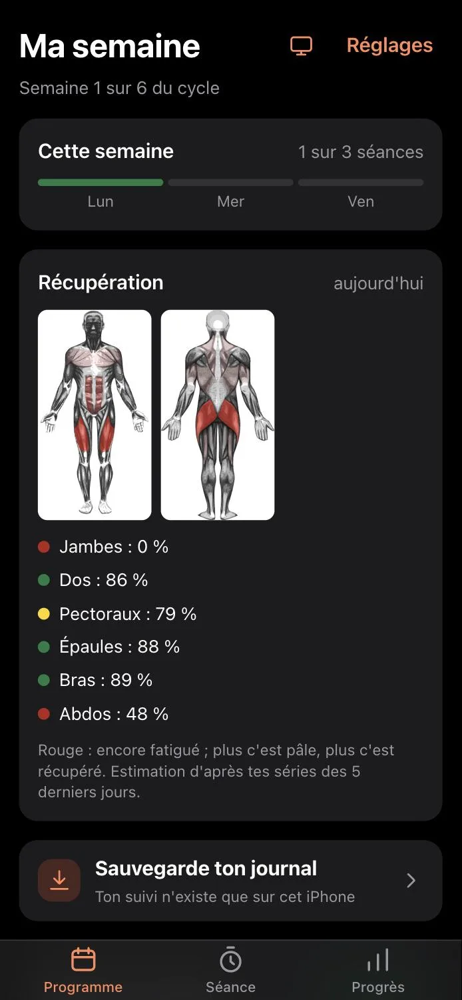

Pour toiLieu chez toiAppli iPhone
Progresse sans te blesser.
Steady écrit ton programme de musculation avec le matériel que tu as chez toi, puis le fait progresser prudemment : la technique d'abord, la charge ensuite.
| Exercice | Sem. 1charge légère | Sem. 2rép. × kg | Sem. 3rép. × kg | Sem. 4rép. × kg |
|---|
Exemple de séance « corps entier », 3 séances par semaine.Entouré : ce qui progresse.
Seulement des charges que tu peux monter.
Steady connaît ta barre et tes disques. Il ne te demandera jamais 52 kg si tes disques ne le permettent pas, et il t'écrit quoi mettre de chaque côté.
- Barre guidée, haltères, kettlebell, élastiques, poids du corps.
- Matériel modifiable à tout moment : un nouvel achat, et le programme s'adapte.
- Gros saut de charge ? Les répétitions montent d'abord.
De chaque côté : 10 + 5 + 1,25 kg
Autour de cette charge
Exemple : barre guidée de 19 kg, disques de 1,25 à 20 kg.
La technique avant la charge.
Chaque nouvel exercice commence par deux séances légères pour apprendre le geste. Ensuite, on n'ajoute du poids que si la série était propre.
- Deux répétitions en réserve sur les gros mouvements, à tous les niveaux.
- Cycles de 5 semaines, puis une semaine allégée.
- Une douleur ? L'exercice est remplacé, tu pourras le réintégrer plus tard.
- Après une pause, la reprise est allégée : 10 % de moins après deux semaines, 20 % après quatre.
| Séance | Écrit | Pourquoi |
|---|---|---|
| 1 | 10 × 29 | Apprentissage 1 sur 2, charge légère |
| 2 | 10 × 29 | Apprentissage 2 sur 2 |
| 3 | 8 × 49 | Première vraie charge |
| 4 | 9 × 49 | Une répétition de plus |
| 5 | 10 × 49 | Haut de la fourchette atteint |
| 6 | 8 × 51,5 | Technique propre : +2,5 kg |
Un point de forme avant chaque séance.
Trois questions, cinq secondes. Mal dormi, courbaturé, à plat : Steady garde les charges du jour ou allège la séance. Peu de temps ? Il propose une séance express.
Pendant la séance, ton iPhone fait le reste.
Une série à la fois, en grand, avec la charge et les disques déjà calculés. Tu valides, le repos démarre.
- Repos minuté, avec une notification même écran verrouillé.
- Coach vocal, et tu valides à la voix : « 10 répétitions validées ».
- La caméra compte tes répétitions et signale une descente trop rapide.
- Échauffement guidé selon les muscles du jour.

Ta séance sur grand écran.
Steady se projette sur ta télé ou ton ordinateur, avec un simple navigateur. Une adresse, un code, et ta séance s'affiche en grand, chrono compris.
Adresse à ouvrir sur la télélaurent-stp95.github.io/
- Ouvre cette adresse dans le navigateur de ta télé ou de ton ordinateur.
- Un code s'affiche : tape-le dans Steady, icône télé de Ma semaine.
- Lance ta séance : elle passe en grand, tu continues de valider sur l'iPhone ou à la voix.
- Le chrono de repos tourne sur l'écran et sonne, même iPhone verrouillé.
- Le coach parle depuis la télé.
- Tout se lit de loin : exercice, consignes, muscles, charge, disques, exercice suivant.
- Miroir : l'image de la caméra de l'iPhone sur la télé, qui compte tes répétitions.
- Associée une fois, la télé se reconnecte toute seule.
- Rien à installer sur la télé.

Tes progrès, sans tableur.
Chaque série est notée. Steady en tire ce qui compte, et te prévient quand quelque chose se déséquilibre.
- Courbes et records par exercice.
- Bilan de la semaine, chaque dimanche soir.
- Carte de récupération : quels muscles sont encore fatigués.
- Équilibre : tu pousses plus que tu ne tires ? Le prochain cycle corrige.


Tout reste sur ton iPhone.
Pas de compte, pas d'abonnement. Steady s'installe sur l'écran d'accueil depuis Safari et fonctionne sans réseau.
- 52 exercices choisis pour s'entraîner chez soi, avec consignes en français et schéma des muscles.
- Hors ligne : la salle au sous-sol ne capte pas ? Aucune importance.
- Sauvegarde de ton journal, et export quand tu veux.
Steady
Progresse sans te blesser.
Appli pour iPhone.